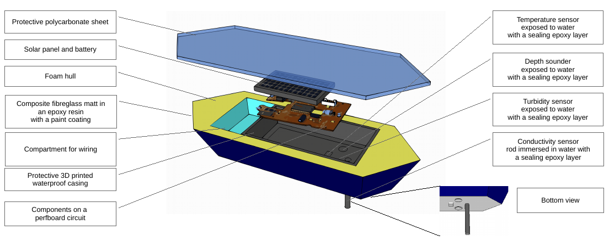

Geological Environmental Monitoring System
About GEMS
GEMS is a portable water quality assessment device in the form of a buoy, to be used inmine or construction site that impacts a body of water nearby. The device is equipped withrange of sensors to measure water characteristics important to the operator. Sensor datacollected with an onboard processor, compiled, transmitted to a storage device such and a web server; cached there for live tracking and data analysis. GEMS also offers Twitter based alerts for parameters that cross set thresholds, allowing the general public to keep a track of water quality. The aim of the project is to aid and assist mines and construction sites to monitor water bodies, lower their costs of quality assessment, provide an adequate early warning system and enhance the safety of both operators and members of the public using the water bodies for economical or recreational activities.
GEMS is a prototype device and will have only a few crucial sensors in its first iteration. The design however, is modular and can be easily scaled up by adding sensors in a custom configuration depending on the end-user’s needs.
